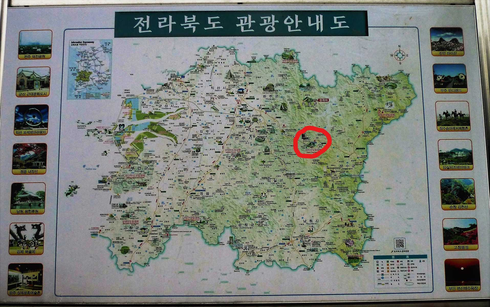
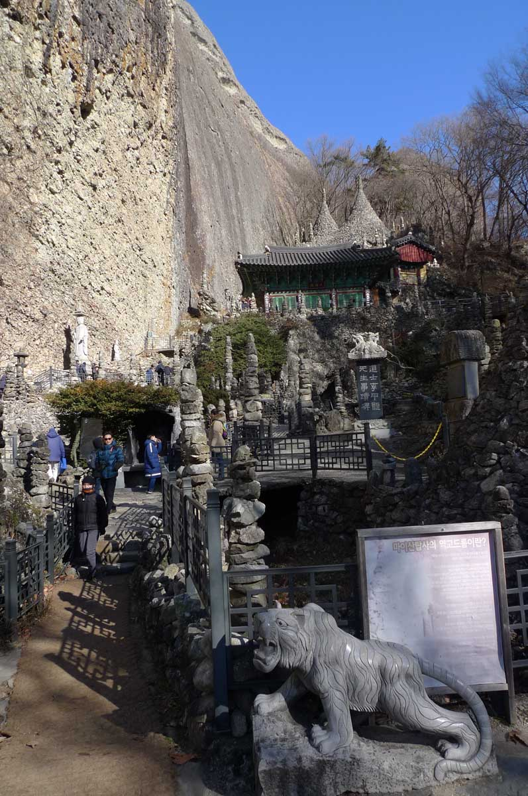
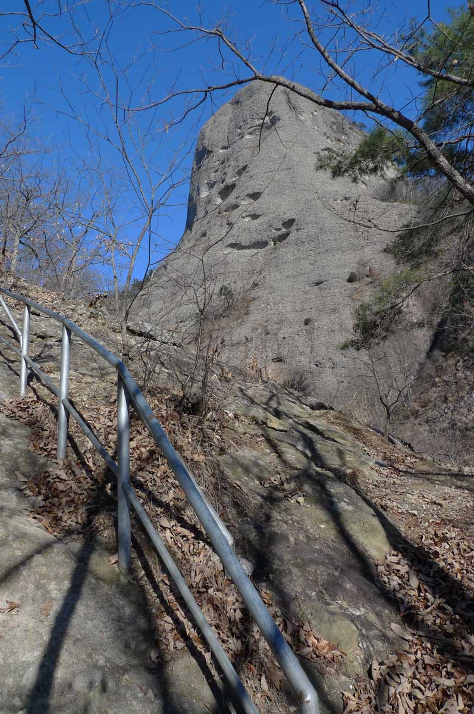
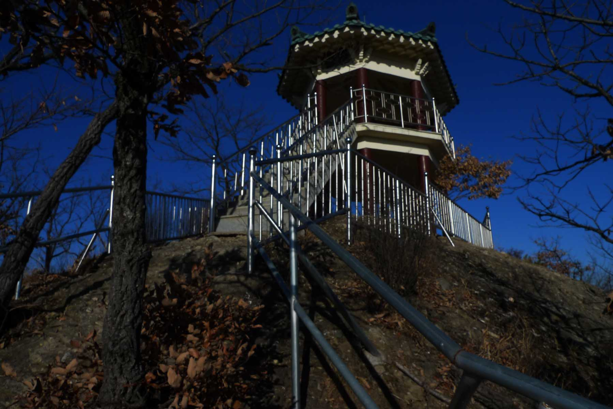

No snow but cold

This hike of 29 December of 2018 was the last hike of the year 2018. It was especially cold (-10), and originally we were
going to 덕유산 DeokguSan but decided to do this hike instead because of the cold and that there was little snow on that
mountain. This is unusual at this time of year but fortunately due to modern technology the ski areas can run with
artificial snow.
We arrived around 10:45 a.m. and hiked around the small lake until we came to the trail that leads up a steep trail around
the piles of rocks that were placed there by monks. This area has an interesting temple and is worth investigating but do
not move any of the rocks.
Pagoda

Located here you can find MaEesandoltap (마이산돌탑)…..”san” is Korean for mountain, dol” is Korean for stone, and “tap” is
Korean for Pagoda. Therefore this is the MaEe Mountain stone Pagoda. A Pagoda is symbolic of Buddha and a site of worship so
you should be respectful at all times. Although in India Pagoda’s were often made from earth and in China from wood when
Pagodas first appeared in Korea in the 7th century, people took advantage of Korea’s plentiful supply of high quality
granite stone which is why most of Korea’s pagodas are made of stone. The area is part of the greater MaEeSan provincial
park (마이산도립공원).
Steep bare rock surface

Then at the top of this area between the ears we turned left up one of the smaller mountains adjacent to the larger of the
ears. At this time of year, winter the tall ears are closed to hiking because of ice and falling rocks. In fact there is a
substantial fine ($1000) if you are caught hiking on these mountains when closed.
Then we scrambled up a steep bare rock surface that looked and felt like cement. This surface was not easy to climb as it
was very smooth. Then the trail varied between a bare rock surface and a dirt path that was covered with leaves. We soon
arrived at an open area to the left that had great views of the adjacent mountains as show in the photos.
Gazebo

We stopped for lunch here and viewed the distant gazebo that would be our next destination. We then hiked on a trail that
was steep at times but not difficult and reached the gazebo which had the best views in all directions. We enjoyed the views
but did not stay long as it was so cold and ascended down a steep ladder. It was a most interesting ladder as it became
steeper when going down it until at the end it was almost vertical!
Closures during the winter
This trail eventually looped around back to the lake and the parking lot. This was not a hard hike and in the winter one can
enjoy the temples and views without all the crowds that ascend on the location in the other seasons of the year. The
negative aspect was that you cannot hike up the ears because their trails are not open in the winter.